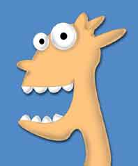

WilyWalnut.com
Meet the Genius in YOUR Brain!
HOME - IQ TESTS - CREATIVITY - GENIUS - BRAIN STORMING - BLOG My secret "Bonkers" techniques for increasing IQ - these are straight from the Loony Bin but you can use them safely to get incredible crazy insights! Completely mad!Do you ever wig out? Get crazy? Do silly things? Act like a loony? Of course you do! For some it may take alcohol, drugs or a pay raise but we all break out of the straight jacket of conventional behavior sometimes - and let rip! And, great firey chestnuts, that's exactly what you should be doing on a regular basis. It's no accident that geniuses are often seen as being eccentric, kooky and plain flat-out crazy! The thing is, geniuses don't think like John and Jane Doe, Mr & Mrs A. Verage, instead their brains are alive with a freedom we all knew as children. We can rediscover that freedom by consciously stepping out of conscensus reality. That means "stepping out of the box"! Some people flip out of consensus reality and never get back into it. For whatever psychological reason, they can't take the pressure of the limitations of society and they just go nuts! We lock those kooky people away and try not to think too hard about them being there and getting regular electric shocks for being awkward. But, "round up the retards", because those hallucinating hoorays have some unique lessons for you and I. 1. Think crazy. Normal behavior follows a familiar track. Man extends hand towards me; I reach out and shake his hand. Someone asks me my name; I tell them my name. We go into the restaurant for dinner; I sit down at the table and wait for a menu. Crazy behavior blazes unfamiliar trails. Man extends hand; I climb up a lampost and sing "Kiss me tender" in Yiddish. Someone asks me my name; I poo on a stick and then paint an aadvark on the sidewalk with it. We go into a resturant for dinner; I eat the chef's shoe and take a bath in the aquarium. Normal behavior says there is one way, possibly two ways, of doing a thing. Crazy behavior says there are an endless, constantly surprising number of ways to do something. Or not do it at all, and make love to a bunch of yellow daffodils instead. Before you decide to do something. Stop. This is your moment of power. Become aware. You can do it as you were planning to do it. Or you can think crazy... and give yourself some fun alternatives. I recommend you do this on a daily basis to maintain your mental flexibility. Whenever you catch yourself doing anything out of unthinking habit, get a little mad, and try something different. Hold your toothbrush with your toes. Wash your hair with jello. Sleep under your bed... in the garden (...somebody elses!) "You don't have to
be mad 2. Act crazy. The mind influences the body, the body influences the mind. You know what a crazy person looks like, right? If I ask you to "do crazy" you would have a pretty good idea of how to act. Of course, there are sub-categories of crazy: Quirky crazy ... but crazy is crazy. So take time to do crazy. I recommend you do crazy on your own where no-one can see you. We don't want you to get locked up or anything like that! I'd feel mildly guilty if the white van screeched to a halt outside your door and the men in white coats dragged you off for the sake of the public good! Wait till the house is empty. Then go wild. Scream, grunt, squeal, run around like a horse, beat your chest like an ape in heat, be a cowboy, a spaceman, an alien invading your kitchen, rub yogurt all over your naked body and take a bath with vegetables in it. You go for it baby! Just break out of yourself and make yourself laugh... be wild, because the wildness is where your true self can be found again. The wildness can break through into your creative mind. (Incidentally, if you are the kind of person who is a "wild woman" or "wild man" much of the time anyway - great! Just think what "crazy" might then mean for you ... maybe you need to spend a little time thinking like an uptight, rigid, scheduled type of crazy person?) When you are comfortable with acting crazy on your own ... spread a little craziness amongst your friends. Let your hair down more often. Show a little more of your mad self. Do funny crazy. Make people laugh. But you know, guage the situation... or at least explain yourself! Now you are acting crazy, act crazy in your approach to problems and tasks. Be wild with it. Be wildly confident with your challenges. Think outside of that consensus reality we spoke of! Give yourself the freedom to smash the accepted framework of doing things to smithereens, and see what else you can come up with. 3. Be crazy. Now you've thought and acted like a complete loony, you are probably close to being a complete loony. As the saying goes, fake it until you make it. Hey at least you'll be more interesting (yeah, to the Doctors!). Being crazy means living like a genius, free from societal restrictions, outside of the mental ruts that are carved out for us. That doesn't mean you can't be like everyone else. It just means that you are free to recognise and choose from the infinite alternative choices. Be crazy. Be interesting. Be different. The abundance of the people universe is made up of those brave, awake, colorful souls who let their own light shine. So I welcome your eccentricities, as long as they don't harm anyone they just add to the palette of life. Wake up. You are a genius. Be the genius that YOU are. Au revoir. Read more of Wily Walnut's crazy creativity articles right here!  FEED ME! I'd love to hear from YOU! Email me: wily[at]wilywalnut.com
GENIUS ARTICLES HOME IQ TESTS - CREATIVITY - GENIUS - BRAIN STORMING - SELF-HELP - BRAINTEASERS - WILY WALNUT | ||
|

"Unleash Your Inner Genius For Creativity & Innovation!" Copyright 2001-2015 WilyWalnut.com SITE MAP